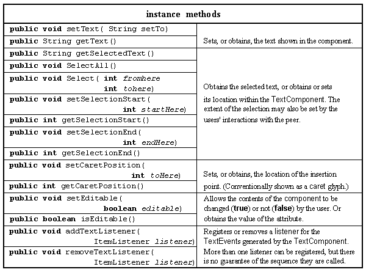
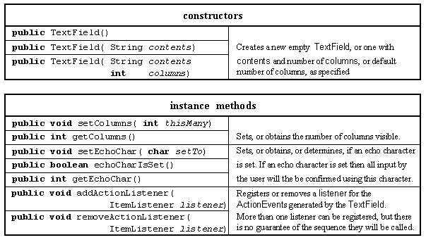
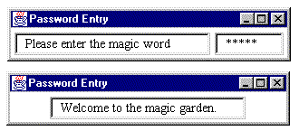
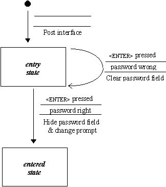

These three classes supply facilitates for the input, and output, of text information. The TextComponent class is not intended to be instantiated, although it is not declared abstract, and provides common behaviour for the single line TextField and multiple line TextArea classes. This section will only introduce the TextField class, the TextArea class will be introduced in Chapter 5. The major resources of the TextComponent class are presented in Table 2.19.

Table 2.19 Major resources of the TextComponent class.
There is no constructor for this class as it is only intended that instances of the TextField or TextArea classes will be created, the major resources added by the TextArea class are presented in Table 2.20.

Table 2.20 Major resources of the TextField class.
The constructors allow various combinations of the String to be initially displayed and the number of columns to be specified. The number of columns defaults to the number of characters in the String for the second constructor and zero for the default constructor. The String contained within the TextComponet can be longer than the number of columns in which case it can be scrolled to the left and right by the user's actions. If the echoChar attribute is set then the specified character will be used to give the user feedback as they type in the field, as will be demonstrated below. An ActionEvent is generated whenever the user activates the text in the component, usually by pressing the <ENTER> key. For single line text, it is more convenient to handle ActionEvents than to handle the TextEvents which are generated every time the text in the component changes.
To illustrate the use of TextField components a PasswordEntry applet will be produced. This applet will start by inviting the user to "Please enter the magic word" in a non-editable TextField. A second editable text field with the echo character set to an asterisk (*) will allow the user to type in an attempt. When the user presses the <ENTER> key the attempt will be checked and if it is incorrect the password entry field will be cleared so that the user can try again. When the user inputs the correct password the password entry field will be removed from the interface, and the prompt field will display "Welcome to the magic garden.". The appearance of the two states of the applet are shown in Figure 2.15.

Figure 2.15 The two states of the PasswordEntry applet.
The state transition diagram for this applet is given in Figure 2.16.

Figure 2.16 The PasswordEntry applet's STD.
The implementation of this class as far as the end of its constructor is as follows.
0001 // Filename PasswordEntry.java.
0002 // Provides an initial example of the AWT TextField class.
0003 // Written for the Java interface book Chapter 2 - see text.
0004 //
0005 // Fintan Culwin, v 0.2, August 1997.
0006
0007 import java.awt.*;
0008 import java.awt.event.*;
0009 import java.applet.Applet;
0010
0011
0012 public class PasswordEntry extends Applet
0013 implements ActionListener {
0014
0015 private TextField passwordField;
0016 private TextField promptField;
0017
0018 public void init() {
0019
0020 passwordField = new TextField( 8);
0021 passwordField.setEchoChar( '*');
0022 passwordField.addActionListener( this);
0023
0024 promptField = new TextField( "Please enter the magic word ");
0025 promptField.setEditable( false);
0026
0027 this.add( promptField);
0028 this.add( passwordField);
0029 } // End init.
On lines 0015 and 0016 two instance attributes of the TextField class are declared, the promptField to be used for the prompt, shown on the left of Figure 2.15, and passwordField used to collect the user's input, shown on the right. On lines 0020 to 0022 the passwordField is constructed as an eight column empty TextField component with its echo character set to an asterisk and its ActionListener set to itself. On lines 0024 and 0025 the non-editable promptField is constructed containing the text specified. The two TextFields are added to the applet Panel, using its default FlowLayout, on lines 0027 and 0028 before initialisation finishes.
In order for this class to satisfy the requirement of the ActionListener interface it must supply an actionPerformed() method, as follows.
0032 public void actionPerformed( ActionEvent event){
0033
0034 String attempt = new String( passwordField.getText());
0035
0036 if ( attempt.equals( "fintan")) {
0037 promptField.setText( "Welcome to the magic garden.");
0038 passwordField.setVisible( false);
0039 promptField.getParent().doLayout();
0040 } else {
0041 passwordField.setText("");
0042 } // End if.
0043 } // End actionPerformed.
This method will be called every time the user presses the <ENTER> key and its first step, on line 0034, is to obtain the text which the user has input using the passwordField getText() method. The String obtained is then tested to see if it is the magic word and if not the event handler will finish after the passwordField setText() method has cleared the password field, on line 0041.
If the user does enter the magic word the sequence of steps is first, on lines 0037 and 0038, to change the text in the promptField and to make the passwordField invisible. The doLayout() method of the promptField's Panel parent is then called to cause the promptField to be centred within the available space, rather than to remain offset to the left after the passwordField disappears.
Design Advice
A non-editable TextField should only be used for a prompt when it accompanies another TextField, in order that the appearance of the two components will be compatible. Otherwise a Label should be used as a prompt.
An extensive example of the use of the TextArea class is included in Chapter 7 and a brief example in the next chapter.